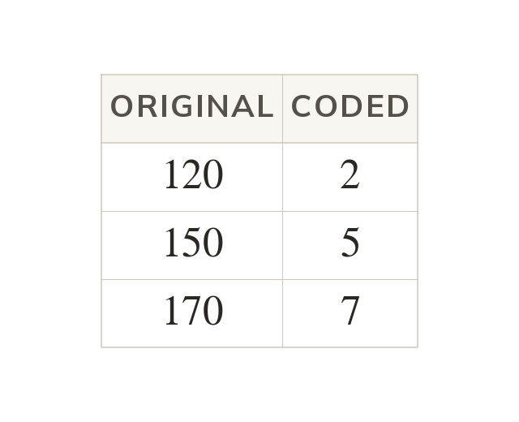
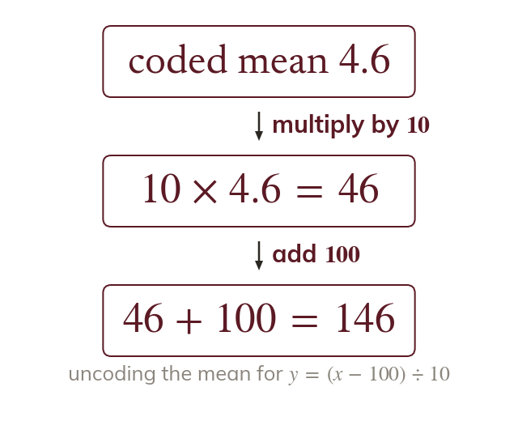
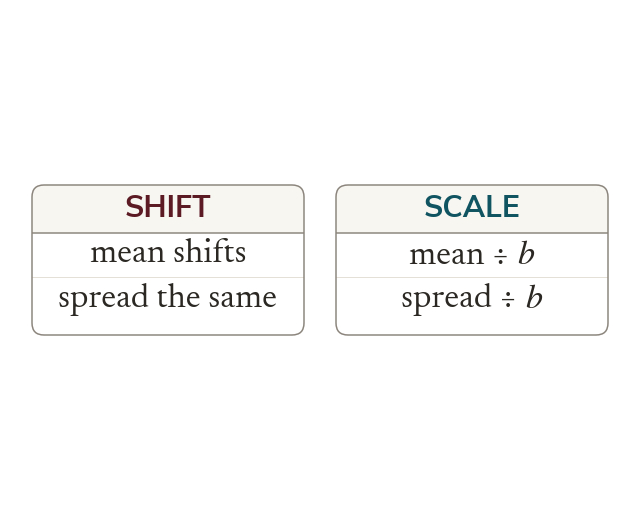
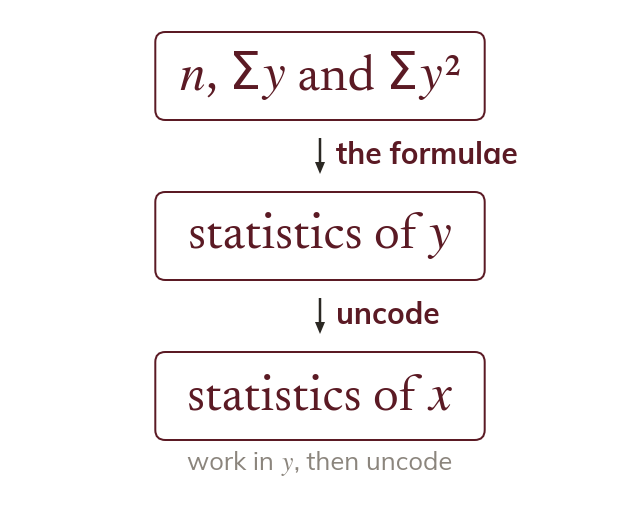
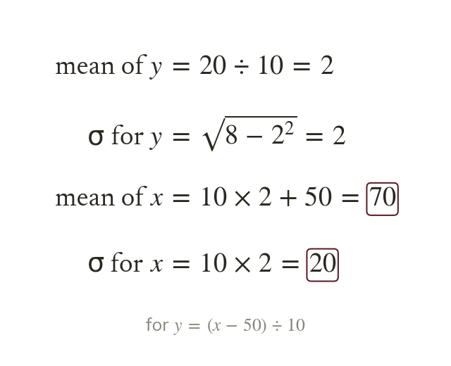
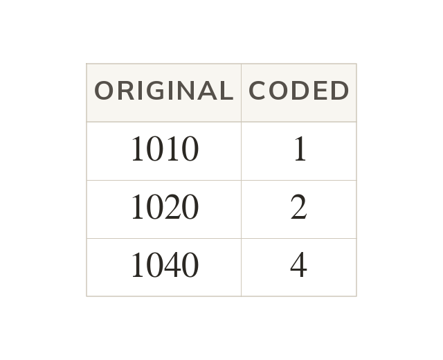

Coding
Coding replaces each value with . Subtracting a shifts the data, and dividing by scales it.
Coding turns awkward values into small, easy ones without losing what the data say. Exam questions often give summary statistics in coded form, and this lesson completes the chapter on location and spread.
Work down the page at your own pace. Write every answer in your book first, then click to check it.
Read each card, then follow the worked examples one step at a time.

Coding replaces each value with . Subtracting a shifts the data, and dividing by scales it.

The mean is coded in the same way, ȳ = (x̄ − So the original mean is x̄ = bȳ +

A shift moves every value the same way, so the spread does not change. Dividing by b divides the standard deviation by b, so the standard deviation of x is b times that of y.
Pick an answer. If it's wrong, the feedback tells you which mistake it was.
Write the blanks in your book first, then tap each one to check.
Read each card, then follow the worked examples one step at a time.

A question may give Σy and Σy², the sums of the coded values. Find the mean and standard deviation of y from them, then uncode.

For values coded with Σy and Σy²
So ȳ = and the variance of is

Subtract a value near the middle, then divide by a common gap. For and gives and
Pick an answer. If it's wrong, the feedback tells you which mistake it was.
Write the blanks in your book first, then tap each one to check.
Finished? Next lesson: 12.S3.1 Outliers and Cleaning Data.
For each skill, tap the one that is true for you today. Your Revise pages start with anything you mark Not yet.
Your ratings are saved on this device only.
Log in, then search for a code to practise that skill.